📰
國家 - Google 新聞
國家 - Google 新聞
中美俄三國元首歷史性峰會結束，發表和平宣言承諾核對話
中美俄三國元首在深圳舉行歷史性三方峰會，歷時約一個半小時，會後發表和平宣言，承諾就防止核擴散展開對話，核戰「打不贏也打不得」；議題涵蓋烏克蘭與伊朗局勢。
深圳 APEC 閉幕，中俄美三國元首歷史性峰會發表和平宣言；美股急挫，道指瀉逾千點失守五萬關，恒指三連跌失守二萬三；Anthropic 史上最大 IPO 首日升 17%。
中美俄三國元首在深圳舉行歷史性三方峰會，歷時約一個半小時，會後發表和平宣言，承諾就防止核擴散展開對話，核戰「打不贏也打不得」；議題涵蓋烏克蘭與伊朗局勢。
深圳 APEC 領導人非正式會議閉幕，通過宣言並提出「深圳展望」，推動亞太共同體建設；中方宣布在深圳設立亞太共同體研究中心，習近平在峰會發表重要講話，呼籲攜手搭建共同體「四樑八柱」。
行政長官李家超在 APEC 期間與新加坡總理黃循財舉行雙邊會談，形容二人交流頻繁，並感謝對方到訪香港鞏固兩地伙伴關係；雙方常任秘書長交流計劃進展順利，明年交流活動擬在香港舉行。
行政長官李家超在深圳出席 APEC 領導人非正式會議，期間與國家主席習近平短暫交流，向對方介紹工商領導人峰會上粵港澳大灣區及亞太發展機遇專題研討情況；與會者認同大灣區發展潛力龐大。
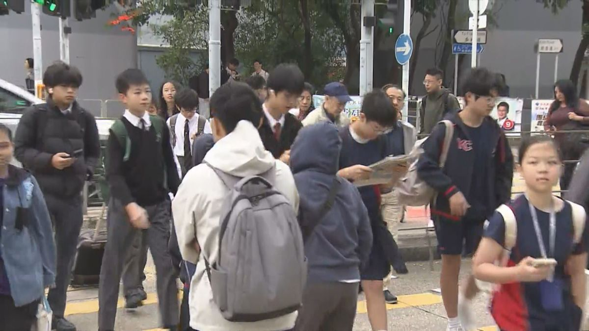
📰受強烈東北季候風及雲雨帶影響，天文台清晨 7 時半錄得 15.3 度，是今年入秋以來最低溫；天文台預測今日市區氣溫進一步跌至 14 度，新界再低一至兩度，強烈季候風信號生效。
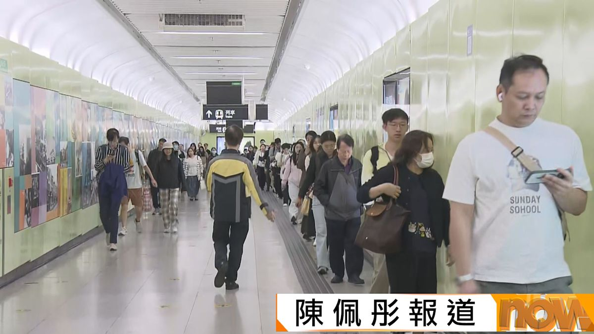
📰港鐵香港大學站附近信號設備在早上繁忙時段發生故障，港島綫列車服務一度受阻約半小時後復常，是同一車站連續兩日故障；港鐵初步判斷兩次故障不屬同一問題。
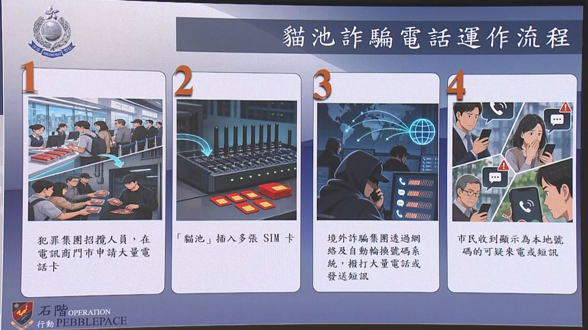
📰警方本月初起偵破 108 宗電話騙案、涉款約 6,800 萬元，共拘捕 123 人，年齡介乎 14 至 75 歲，最年輕者涉嫌向長者收取騙款後私吞部分贓款；行動檢獲電話卡、電腦及「貓池機」，並搗破觀塘及紅磡的詐騙電話操作中心。
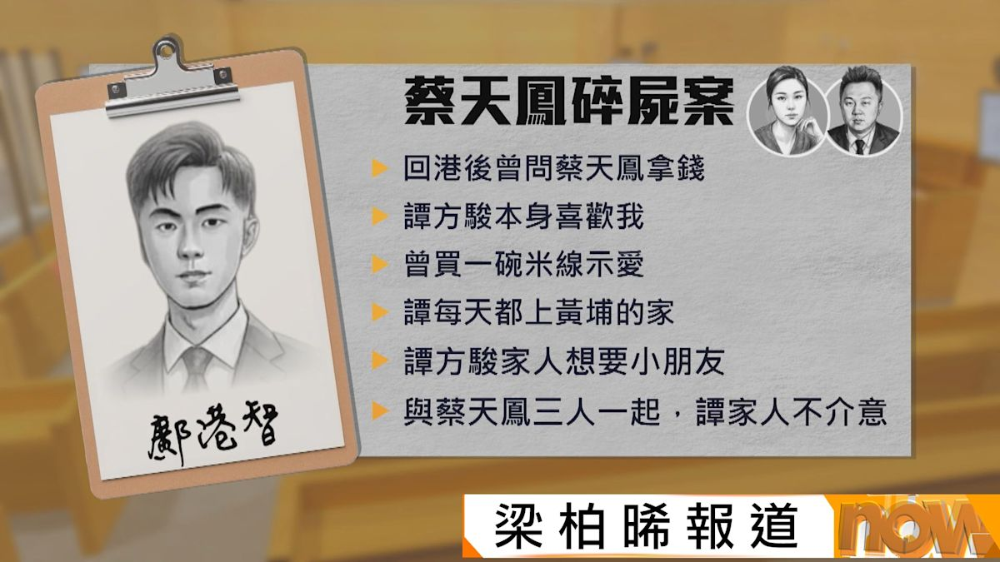
📰蔡天鳳案踏入第 41 日審訊，前夫鄺港智首度作供，稱案發前與蔡天鳳仍維持戀人及性關係，又稱蔡天鳳丈夫譚方駿喜歡他在先、曾用米線示愛，形容三人是複雜的三角關係；同日鄺球完成作供，否認有計劃殺害蔡天鳳。
兩間二手名牌店疑拖欠客人約 4,200 萬元寄賣款項，警方接獲 303 人報案；其中銅鑼灣羅素街店舖涉約 3,000 萬元、金鐘海富中心店舖涉約 1,190 萬元，案件暫列欺詐，由重案組跟進。
六合彩將於下周二（24 日）「幸運二金多寶」首度推出「集氣加碼 頭獎升呢」互動體驗，整體累積投注額達指定門檻，馬會便相應增加金多寶金額；以 10 元一注獨中計算，估計頭獎基金最高有機會達 8,000 萬元。
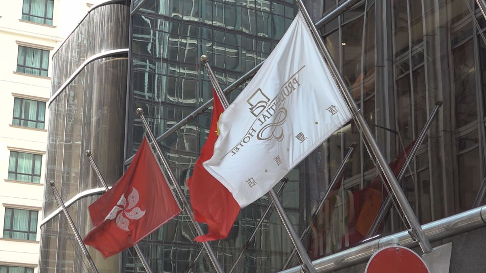
📰恒豐酒店因合謀定價原被判罰款約 10 萬元，競委會認為罰款過低提出上訴；高等法院裁定上訴得直，指原判未能反映嚴重性，將罰款提高至 95 萬元，恒豐並需支付競委會上訴及早前聆訊訟費。
勞工及福利局局長孫玉菡在 APEC 期間與智利簽署工作假期計劃協議，雙方每年各有 100 個名額、可逗留最多一年；雙方將再交換信件確定正式推行日期，預計明年較早時間開始推行。
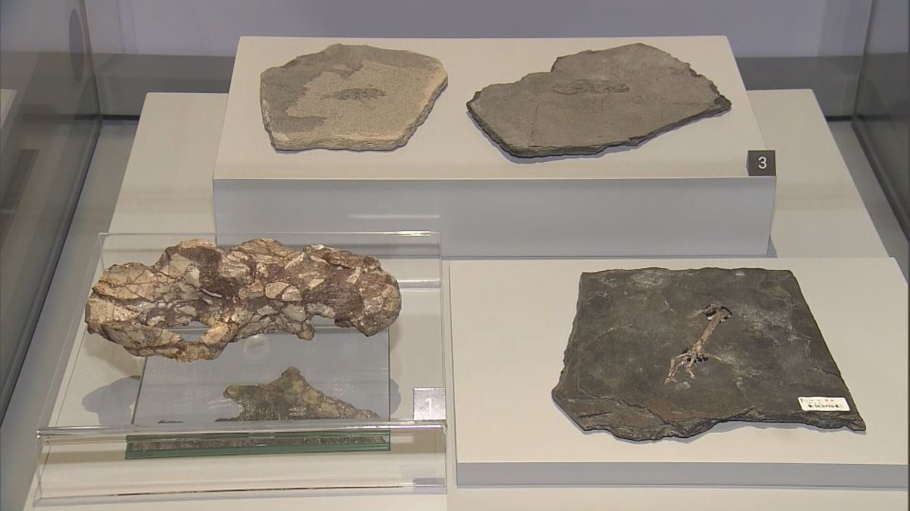
📰發展局與中國科學院古脊椎動物與古人類研究所合辦恐龍化石展，於九龍公園文物探知館展出 66 組珍貴展品，包括赤洲出土的全部恐龍化石及 46 組大灣區以至全國白堊紀化石，其中 34 組為國家一級重點保護古生物化石；展覽今日起免費開放至明年 5 月 12 日。
美國「旅行者 1 號」探測器飛行 49 年後，抵達距離地球「一光日」的里程碑，成為距離地球最遠的人造物體。
屯門雅都花園第 3 座疑因食水管爆裂，自周二起停水，住戶今日踏入第三日無食水，部分低層住戶需到地面垃圾房旁取水，居民投訴應變安排緩慢。
美股周四顯著下挫，科技股沽壓加劇，道指急瀉 1,101 點、失守 50,000 點關口，標指及納指亦跌逾 2%；市場憂慮 AI 企業估值過高，加上聯儲局釋出進一步收緊貨幣政策的訊號，投資者風險胃納轉弱。
亞太股市跟隨美股走低，日經 225 指數跌幅擴至 2.9%，韓國 KOSPI 曾跌逾 4%，SK 海力士跌 5.8%、三星電子跌 4.3%。
恒指昨日低開後跌幅擴大，收報 22,841 點、跌 453 點或 1.9%，三連跌失守 23,000 點；北水全日淨流入 39.59 億元，淨買入最多為騰訊、中芯及美團，淨賣出最多為阿里。
阿里巴巴第二財季收入 2,715.19 億元人民幣、按年增 10% 勝預期，經調整純利 199.09 億元、升 92%，但升幅遜預期；AI 雲與算力服務收入升 53%，歸屬股東淨利潤 645.35 億元、增長約 2.07 倍。
Anthropic 周四在納斯達克掛牌，定價每股 83 美元，開市報 111.5 美元，收市報 97.17 美元、仍較招股價升 17%，上市首日一度錄得約 2 萬億美元市值，反映投資者對 AI 企業需求強勁。
聯儲局 10 月會議紀錄顯示幾乎所有官員支持進一步加息，部分更認為 12 月可能需要加息半厘；加息預期升溫推高美元，現貨金價跌約 3%、失守每盎司 3,800 美元，一度跌至 3,719 美元，創 2025 年 9 月底以來最低。
市建局以 26.88 億元前期預付款，將土瓜灣道／榮光街地皮授予信置及鷹君組成的合營公司，雙方分別持股 75% 及 25%，項目資本承擔總額預期約 58.7 億元。
聯儲局鷹聲嘹亮，加上騰訊業績未合乎市場期待，恒指開市即失守 23,000 點；騰訊第三季資本開支急飆逾五倍，大行齊削目標價，權重科技股拖累大市弱勢未改。
人民幣兌美元即期匯率收報 6.6651，較上個交易日升 2 點子，四連升，續創 11 月 2 日以來逾兩周新高；離岸人民幣現報 6.6657。
網易上季經調整盈利跌 3.6%，今日公布業績；美國今日亦公布密歇根大學消費者信心指數，聯儲局理事將發表講話，料為周五市場焦點。
港股 ADR 較本港上日普遍下跌，阿里巴巴 ADR 折合收報 81.67 元、較港股收市升 1.39%，騰訊 ADR 跌 0.6%、百度跌 2.51%，蔚來 ADR 跌 5.52%。
拼多多第三季度營收 1,083 億元、淨利潤 295 億元，超出市場預期。
紫金礦業董事會通過以集中競價交易方式回購 A 股方案，回購金額不低於 20 億元、不超過 30 億元人民幣，每股回購價不超過 35 元，預計回購約 5,714 萬至 8,571 萬股。
阿里巴巴第二財季收入 2,715 億元人民幣、按年增一成，歸屬股東利潤大增 2.13 倍至 644 億元，主要來自投資淨收益及經營利潤；但自由現金流淨流出按年增 58% 至 344.7 億元，資本開支劇增至 504.7 億元，作者認為管理層已交到功課。
東方表行中期股東應佔溢利 1.03 億元、按年升 1.81%，派息依然慷慨：中期息 0.053 元加特別息 0.159 元，合共 0.212 元，明年 1 月 8 日除淨；財政狀況良好，市賬率僅 0.88 倍。
騰訊第三季收入 2,073 億元人民幣、按年增 7.5%，股東應佔溢利升 0.8% 至 636 億元，表面中規中矩；但資本開支達 814.33 億元、按年大增 5.27 倍，集團由現金淨額轉為債務淨額 137 億元，現金流明顯惡化，令投資者擔心。
 魔術師的伊謝爾倫日記
魔術師的伊謝爾倫日記
本期雜評談及教育修例草案即將刊憲，教師須申請有效期不超過三年的執業證明書，申請條件包括維護教師專業、遵守法律及 60 小時持續專業發展等，立法會教育界議員稱有助淘汰「殭屍牌」、提升教師社會地位。
小米年底旗艦 Xiaomi 18 Pro 系列登場，主打 AI 百變背屏與 Leica 雙 2 億像素相機，加入年底手機「軍備競賽」；香港同步開賣，詳情與售價可參閱原文。
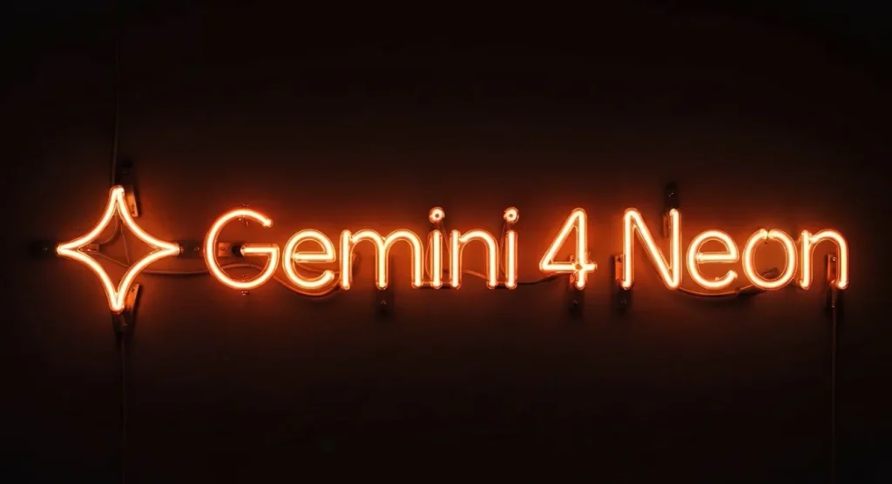
📱Google 推出 Gemini 4 系列新模型 Neon，編碼、推理及代理任務表現與高階 Carbon 相當，但速度達 Flash 級別、成本更低，已取代原有 Argon 模型，並向 AI Pro 及 AI Ultra 訂閱用戶開放。
萬眾期待的《GTA 6》今日正式登陸 PS5 及 Xbox Series X|S，各地按時區午夜解鎖；Rockstar 確認四款主機均以 30fps 為目標，即使 PS5 Pro 亦無更高幀率模式。
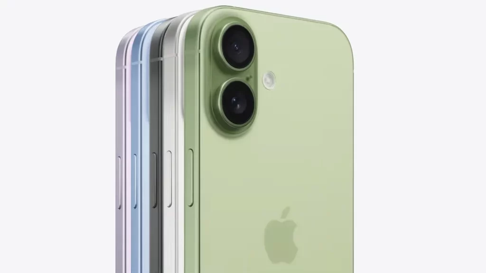
📱據韓國 ETNews 報道，三星顯示計劃 1 月起量產面板、LG Display 預計 12 月底開始生產，標準版 iPhone 18 及 iPhone Air 2 傳於 2027 年 3 月推出；消息仍屬供應鏈傳聞，Apple 未有公布。
J.P. Morgan 年度消費者調查顯示，73% 受訪者計劃在 2026 年購買新 iPhone，為近年最高；美國 Android 用戶對 Apple 首款摺疊手機 iPhone Duo 表現出濃厚興趣。
 流動日報
流動日報
Apple Support Community 討論區將於今日（11 月 20 日）永久關閉，結束近 28 年歷史；討論區已進入唯讀狀態，最終帖子將被完全移除。
 流動日報
流動日報
iOS 27.3 Public Beta 2 帶來全新日曆控制選項與增強 Siri AI 功能，Siri AI 支援繁體中文；iPhone Duo 新增以外置自拍鏡頭解鎖功能，但支付認證仍需 Touch ID 或裝置密碼。
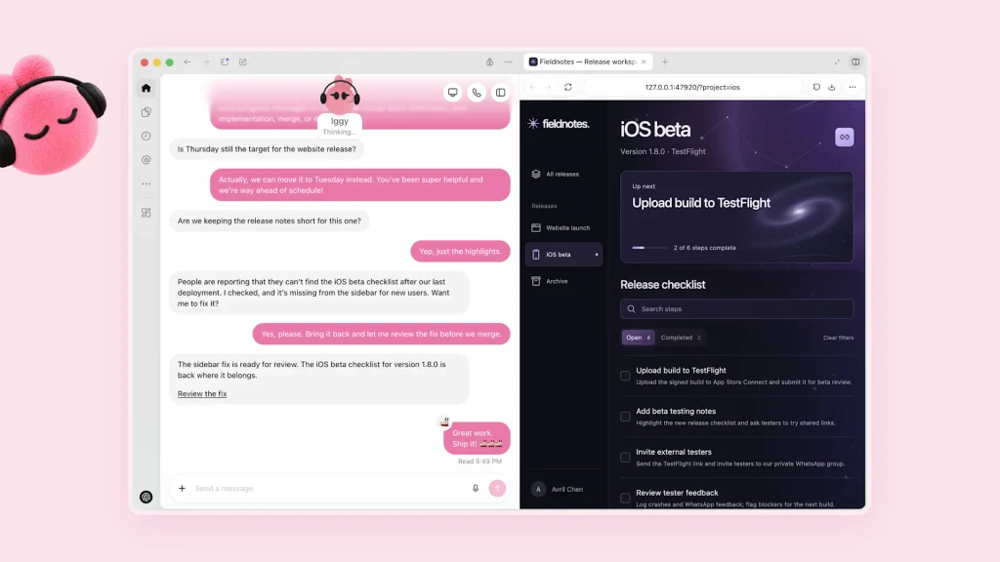
📱OpenAI 開始向少數 ChatGPT Plus 訂閱者測試常駐主動助手 ChatGPT dot，並擴展至所有 ChatGPT Business Standard 用戶；它由 GPT-6 Astra 驅動，能處理持續性任務、跨應用程式工作。
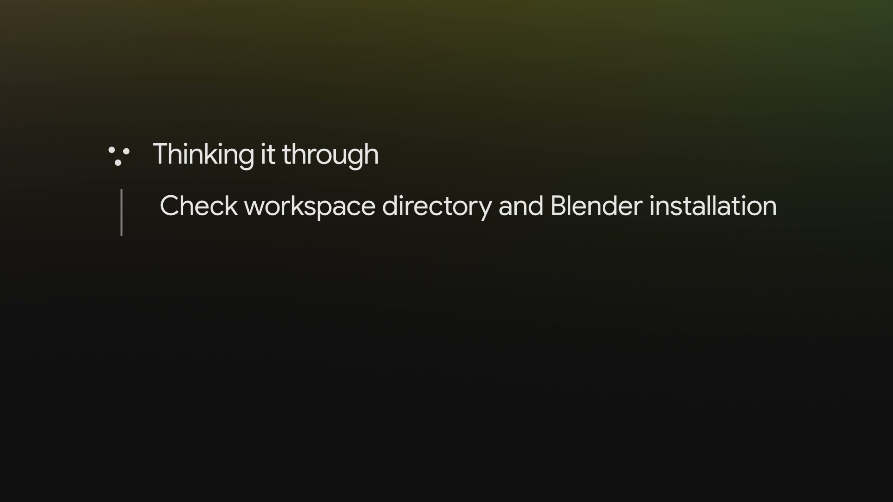
📱Gemini Mac 版 App 正式加入 computer use 功能，用戶以文字描述工作，Gemini 便可在背景視窗代為跨檔案、應用程式及網站執行多步任務；功能先在美國以英文推出。
工商信息顯示，DeepSeek 工商主體完成變更，註冊資本增至約 1991.87 萬元、增幅約 21.1%，新增股東涵蓋騰訊、寧德、vivo、美的等互聯網、終端及製造業機構，第二輪千億融資正式落地。
勒索軟件組織 The Gentlemen 於 11 月 18 日將 NVIDIA 列入暗網資料外洩網站，聲稱取得公司資料並倒數 10 日威脅公開；NVIDIA 官方稱系統未受影響。
最新版本 WhatsApp 將群組人數上限由過往水平大幅增至 1,500 人，管理大型公開群組的用家要留意新上限帶來的管理變化。
開源數據庫 PostgreSQL 19.0 正式發布，強化工作負載管理、分布式數據處理及開發者體驗，新增對序列值邏輯複製的支持；此前因 AI 生成的大量缺陷報告及安全問題，發布曾推遲數周。
記憶體報價持續急升，大廠早前預計加價潮延續至 2027 年，部分平價智能手機已用上拆機晶片；爆料引述業內估計，記憶體可能要到 2028 年下半年才有機會減價，屆時報價仍可能處於高位。
Anthropic 完成首次公開募股，共募得 813.1 億美元，超越 SpaceX 今年稍早的上市規模，成為全球史上規模最大的 IPO，估值達 1.5 兆美元；上市首日股價升 17%。
OpenAI 宣布遞歸自我提升閉環已啟動，AI 開始參與研發 AI；重度用戶日均花費達 2.3 萬美元使用 AI 智能體，AI 已能提出關鍵科研洞見，但複雜研發任務零干預成功率仍有限，人類仍是審核把關核心。
基於 Claude Opus 5.5 的智能體 Horizon 主導 AI 自主造模型實驗，七周內產出 38 個輕量小模型，總下載量約 5.5 萬次，進入百餘個 GitHub 項目；實驗總花費僅約 1,030 美元，人類僅在頭三天少量介入。
騰訊推出原生多模態模型混元 Hy4 flash 並已開源，參數量 224B、支持 100 萬 token 上下文，輸出速度可達每秒 200 token；通過四環節協同優化，單任務成本壓至原 Hy4 的 1/20。
英偉達接近以逾 5 億美元收購擴散式 AI 開發商 Inception，進一步擴展其 AI 模型版圖。
由對沖基金老將 Larry Chen 創立的香港家族辦公室 Anther Capital 上季度清倉總值約 39 億美元股份，持倉此前集中於 AI 硬件及芯片製造商，包括西部數據、美光科技，正值投資者普遍撤離 AI 相關資產之際。
輝達共同創辦人暨前執行長黃仁勳上週辭職，原因涉及多起與員工的婚外情醜聞，以及被指控與中國間諜有關的事件，引發國家安全疑慮；OpenAI 行政總裁 Altman 力挺，稱 AI 產業難以想像沒有他。
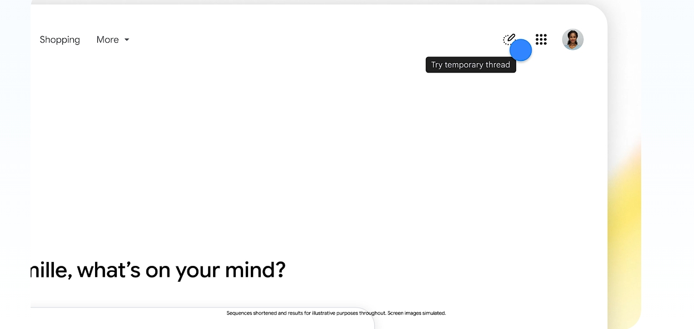
🤖Google 搜尋中的 AI Mode 新增「臨時對話」功能，類似無痕模式，對話內容不會在日後搜尋紀錄或推薦內容中再次出現，適合處理不希望與帳戶連結的查詢。
卡內基梅隆大學等機構推出 Singularity-Bench 基準，Claude Opus 5.5 搭配 Claude Code 憑自研推理引擎，在相同硬件下將首 token 延遲由約 12 秒壓縮至 0.48 秒，六項任務取得五勝一平，是唯一總分超過人類基線的組合。
英偉達 SEED 技術讓模型寫入記憶而不必讀完整個網絡，每 GPU 吞吐最高提升 42%，為長上下文推理帶來效率突破。
斯坦福大學的 Agent 工程課程正式開源，手把手教開發者從零搭建 Agent，適合想系統學習智能體開發的讀者。
富時羅素表示，Anthropic 將快速納入富時全球股票指數系列，上市後即獲指數編製機構認可，反映其市值規模已達大型指數成份股水平。
OpenAI 行政總裁 Altman 為「AI 造 AI」的遞歸自我提升踩剎車，強調方向盤必須握在人類手中，呼應業界對 AI 自主研發速度與安全邊界的關注。